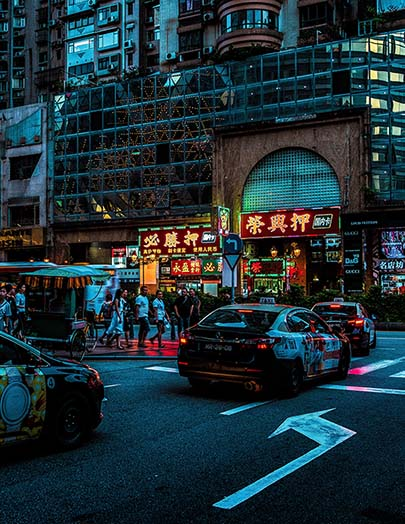
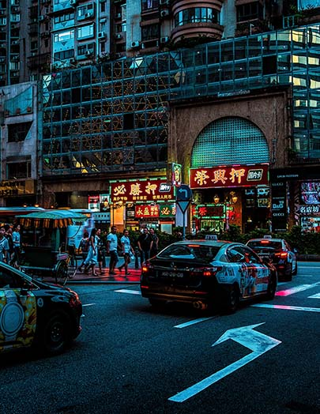

A big factor of traveling to a foreign country is where are tourists going to stay? Is it safe? And how much is it? Well, after reading this, young adults or anyone reading will have a general idea of how they’ll get through in China. In China, as mentioned by Travelistos [3] , hotels can cost around 60 euros which equals out to around $68 US dollars. Other alternatives are accommodation houses, called Zhusus, located in buildings themselves and can range to 30-60 euros ($33-68). Another option is what they call a Hutong, these old houses are modeled after ancient China and range to around 30-50 euros ($39-56). Located at the airports are sleep boxes which people can stay for a night and it includes a bed and small television. Something to remember is to be careful when traveling in foreign countries and the restrooms or rooms may be shared with others. According to Local Adventures [4] , travelers should always have their passports, the government in China requires their visas and for it to be registered under the local government upon arriving. Having read through, hopefully young adults out there looking for an adventure have a general idea of how to get around in China and how it’d be like to stay in-country. Lastly, don’t forget to enjoy the stay, celebrate, and have fun.
 

For young adults looking to travel to China, there are many factors like how to get there, lodging, and in-country transportation to consider. After reading through, tourists headed to China should have a rough idea of how it’s going to be. According to China Travel [1] , the transportation methods throughout China since the 1990s have gotten better. Airlines in China offer comfortable seating and services for travelers; additionally, There are around 244 international airlines in which the most popular being Beijing, Shanghai, and Guangzhou. In some major Chinese cities, there are 72/144 hour visa free policies in which a visa isn’t needed to enter or remain in-country. In some other cities, there’s no visa required anyway like Beijing. According to China Travel [1] and Top China Travel [2] Some reliable airlines in China include: Air China International Corporation, China Eastern Airlines, China Southern Airlines Co. ltd, and Xiamen Airlines. Aside from airlines, there are also in-country transport options like the metro, train stations, highway and waterway transportations, buses, and taxis. On the trains, there are four classes: Hard- Seat, Soft- Seat, Hard- Sleeper, and Soft- Sleeper. The Hard Seat has around 3-5 people facing each other and provides little comfort while the Soft Seat provides more comfort and has a cleaner environment. The Hard Sleeper has 6 bunks with more people while the Soft-Sleeper has 4 bunks, more comfort, and a desk lamp. The expressways and highways make traveling by car more efficient. To use the expressways on regular days, fees are charged, but free on holidays. Aside from buses, taxis, and trains, there are bikes they can rent in most cities. The next time tourists find themselves looking into flying out to China, they should definitely remember these factors.